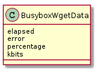
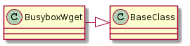

A wget hack for the busybox wget command (to simulate file-transfers over the internet).
This is what will be returned by the wget. The idea I am converging on is that commands get data and return it, tools and sessions are the ones that know what to do with it (like save it).

| Attribute | Meaning |
|---|---|
| elapsed | Seconds from wget call until the output is complete |
| error | Error message found in the output (if any) |
| percentage | Percentage of transfer that successfully finished |
| kbits | kbits successfully transferred |

| BusyboxWget(url, connection[, timeout, ...]) | Does a wget and times it. | ||
| BusyboxWget.arguments |
|
||
| BusyboxWget.expression | A compiled regular expression to match the output. | ||
| BusyboxWget.run() | Executes a single wget | ||
| BusyboxWget.__call__([parameters]) | Executes a single wget, checks for a success, returns data |